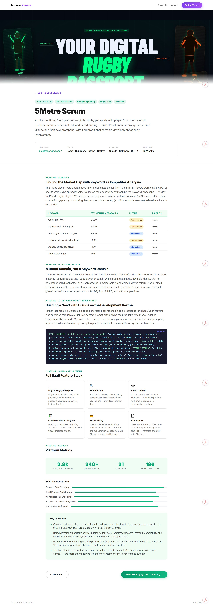
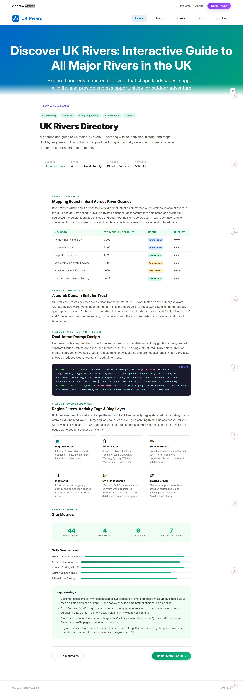
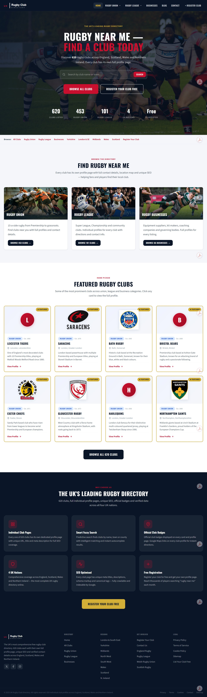

Engineering AI.
Designing the experience.
AI Automation & Prompt Engineer with 18 months of production AI engineering, built on 5+ years of UX/UI at Harrods and Samsung. Five live platforms ranking on page one of Google.


Built with Claude.
Ranked on Google.
Production AI systems engineered from keyword research through deployment — five live platforms, 40+ page one rankings.
AI SaaS · Prompt Engineering · Full-Stack
5Metre Scrum
Rugby players had no digital-first CV — scouts used spreadsheets, players emailed PDFs. No platform existed for the market gap.
End-to-end SaaS with Claude API auto-writer, 8-step player onboarding, scout search board, combine metrics, Stripe tiers, PDF export, and Google auth — via context-first prompt engineering.
First paying Stripe subscribers live within weeks. 2,800+ registered players, 340+ clubs scouting across 31 countries.
AI Content Automation · Technical SEO
UK Rivers Directory
High-volume river queries (9,900/mo) were being served by fragmented, low-quality pages. A clear gap for structured, comprehensive content existed.
44 river profiles generated via dual-intent Claude prompting — separating factual and activity content to keep tone consistent. Technical SEO layer with structured metadata and programmatic internal linking.
Page one Google rankings for "rivers in Yorkshire", "longest rivers in England", and 20+ related terms — verified via Search Console.

AI Automation · SEO Engineering · SPA Debugging
UK Rugby Club Directory
A live site had suppressed search visibility. Hash-fragment URLs, duplicate canonical tags, and broken redirect loops were blocking Googlebot from indexing 620 club profiles.
Diagnosed and resolved all SPA indexing failures. Engineered an n8n workflow to research, write, and publish SEO-optimised club content at scale using graceful-degradation prompting.
National page-one rankings for "UK rugby clubs" and 40+ local intent keywords. 620 fully profiled clubs across all four UK nations.
Research-led design.
Real-world impact.
End-to-end UX across luxury retail, public sector, and regulated industries — grounded in user research and WCAG 2.2 AA.

UX/UI · Enterprise Retail · Harrods
Harrods Pre-Order Feature
Harrods had no pre-order capability. High-intent customers were missing limited-edition launches — costing loyalty, revenue, and demand forecasting for the business.
End-to-end UX from discovery research through Figma prototyping, WCAG 2.2 AA compliance, developer handover and QA. Integrated the reservation flow directly into the existing product page to preserve the luxury experience.
85% reduction in support queries. 100% task completion in usability testing. Stakeholders described the outcome as exceeding expectations.

Brand Design · Google Design Sprint · Imperial Brands
BluVape Brand Reimagination
BluVape was losing market share to competitors. The brand felt outdated and fragmented — no long-term customer loyalty, no emotional connection. A regulated environment meant no room for error.
Facilitated a 5-day Google Design Sprint — mapping, diverging, deciding, prototyping, and testing an Integrated Loyalty Ecosystem with tiered rewards, starter kits, and a tobacconist portal.
87% user approval in five days. Ambiguity to validated, stakeholder-aligned direction — confidence to invest in full brand transformation.

Accessibility · GDS · Public Sector
Blue Badge Digital Companion
2.5 million disabled people were navigating a paper-heavy, inaccessible Blue Badge application — 20% lost in the mail. The existing digital service had critical WCAG failures throughout.
GDS question-per-page service from scratch — magic link auth, auto-save, real-time SMS updates, contextual evidence guidance. All 9 WCAG 2.2 AA criteria passing from day one.
40% fewer incomplete applications. 85% reduction in council support calls. Passed GDS service assessment at first review.
The ultimate toolkit for AI & design
From production Claude API systems to WCAG-compliant UX — everything needed to ship real products.
Ready to ship
something real?
Open to freelance projects, long-term partnerships, and exciting new challenges.
azvoma@gmail.com